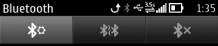
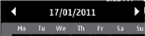

The principal use of the Navi pane is to display information about the current state and view, and to help the user navigate in the application. Depending on the context, the Navi pane can contain elements shown in the table.
Note: For consistency in UI style, do not use the Navi pane for purposes other than those detailed below. When the Navi pane area is not being used, it provides more space for application content; it is an optional element and need not be visible at all.
| Component | Description |
|---|---|
Tabs  |
Tabs are used when there are parallel data views that can be viewed alternatively. Arrow indicators are used only for navigation texts. Tabs can contain only icons, and only four can be visible at a time. If there are more than four tabs, the fifth tab is partially visible, indicating to the user that additional content is available. |
Navigation text (icon+text)  |
Navigation text is displayed in the Navi pane when there are similar items to be browsed by scrolling horizontally, for example, dates in the Calendar. If textual tabs are needed, the navigation text should be used. Arrow indicators at both ends of the pane indicate the possibility of scrolling. |
Application-specific content |
When none of the above content types are suitable, the Navi pane content can be designed specifically for an application. The Navi pane can contain, for example, text and image. |
The API to use for the Navi pane is the Navigation pane API. If you use tabs in the Navi pane, the API for controlling the tabs is the Tabs API. Applications can implement an observer to handle the touch events in the Navi pane area.
For the indicators in the Navi pane, use the Indicators API.
For more information about these APIs, see Symbian C++ API specifications.
The MAknNaviDecoratorObserver class provides touch support for the tab arrows in the Navi pane. To set the observer, use the CAknNavigationDecorator::SetNaviDecoratorObserver() method.
To create a tab group in the Navi pane, use the CAknNavigationControlContainer::CreateTabGroupL(). This is a factory method for a pre-implemented navigation pane tab group control.